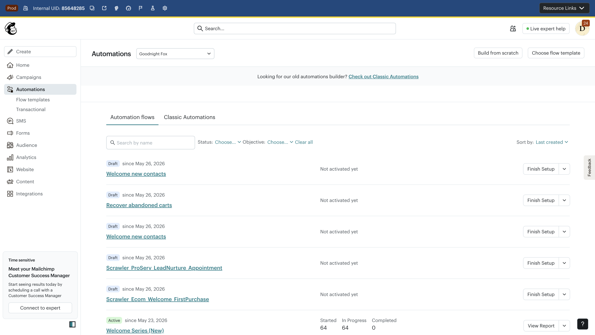
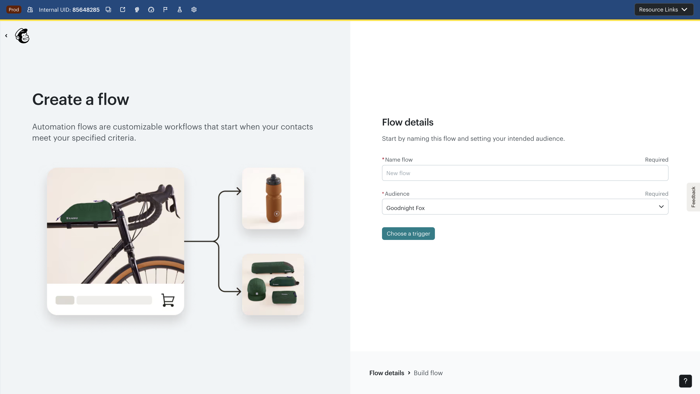
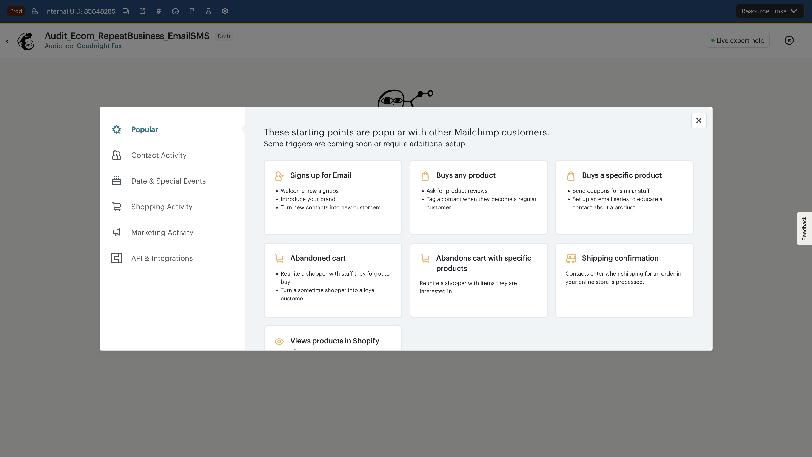
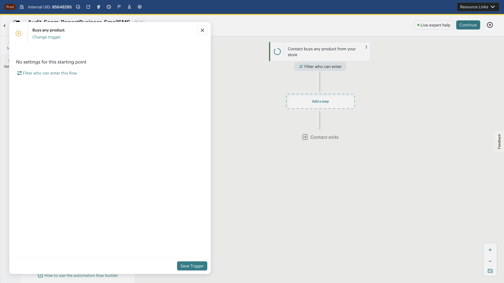
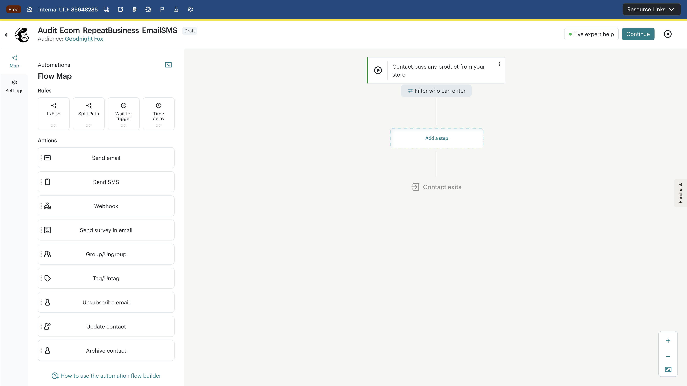
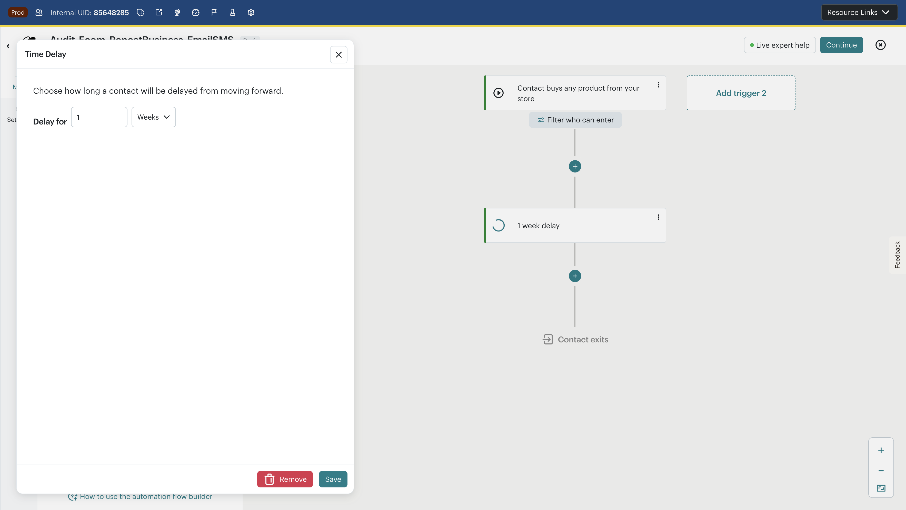
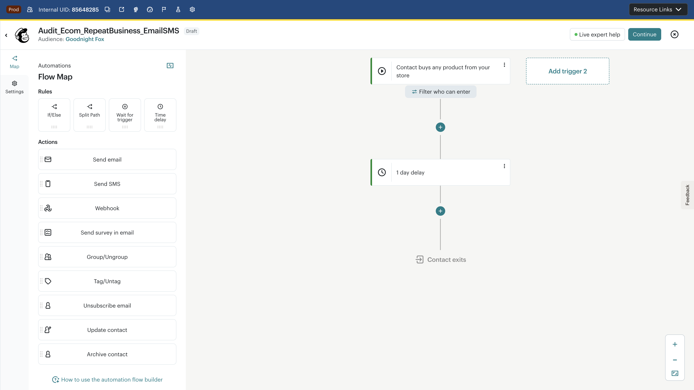
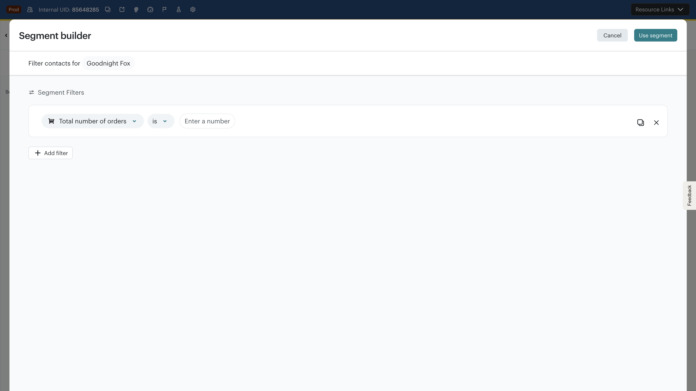
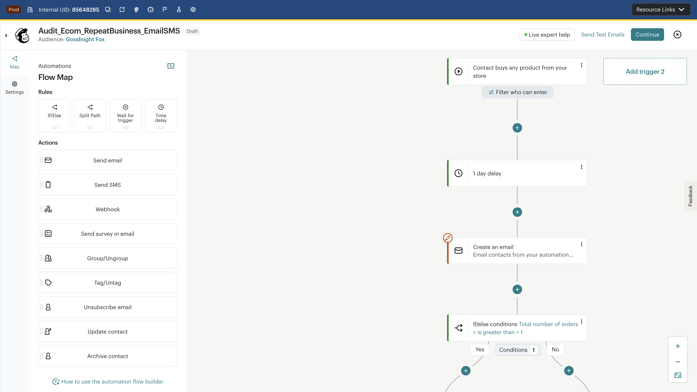

BigQuery-Sourced Flows · Expert Marketer Perspective · Mailchimp CJB · Goodnight Fox (us17) · May 26, 2026
0/2
Flows Fully Replicated
11
Screenshots Captured
14
Issues Found
4
P0/P1 Blockers
6
Competitive Gaps
Replication Verdict
Neither BigQuery-sourced flow could be fully replicated in CJB.
The 17-step e-commerce flow ("Drive repeat business with email & SMS") hit a structural wall at step 6: CJB cannot branch on real-time behavioral events like "product added to cart within 7 days" or "product viewed on website within 7 days." These are table-stakes conditions in Klaviyo Flows. The 9-step non-e-commerce flow ("Recover abandoned carts with SMS and email") could be partially built but requires workarounds for event-based conditions. Both flows remain as Draft — never activated.
What this means for Mailchimp:
The most common automation patterns used by sophisticated e-commerce marketers (sourced directly from BigQuery production data) cannot be replicated in CJB. This is not a UI polish issue — it's a capability gap. Marketers who want these flows will choose Klaviyo, not because Mailchimp is hard to use, but because Mailchimp literally cannot do what they need.
Methodology
Source data: Two real-world automation flows extracted from bi_aggregate.product_journey_monthly BigQuery dataset, representing the most complex (17-step) and most common (9-step) patterns in production.
Replication approach: Step-by-step build on live Mailchimp CJB (Goodnight Fox account, us17 datacenter). Each step attempted exactly as specified, with screenshots at every configuration point. Flows saved as Draft only — never activated.
Persona: Expert e-commerce marketer migrating from Klaviyo, attempting to recreate their existing automation flows.
Trigger: Customer makes first purchase (product_bought, orders = 1)
Delay: 1 day
Email: Post-purchase thank you — "Thanks for your purchase"
Delay: 1 day
If/Else: Has made second purchase? (orders > 1)
If/Else (No path): Adds product to cart? (contact_event: product_added_to_cart, within 7 days) — NOT REPLICABLE
If/Else (No path): Views product on website? (contact_event: product_viewed, within 7 days) — NOT REPLICABLE
Email (Yes from #7): Browse abandonment — "Pick up where you left off"
If/Else (No from #7): Opened post-purchase thank you email? — PARTIAL (no "within timeframe")
Email (Yes from #9): Re-engagement — "We think you'll like these"
SMS (No from #9): Re-engagement SMS
Email (Yes from #6): Abandoned cart — "See something you liked?"
Delay: 1 day after abandoned cart email
If/Else: Has made second purchase? (repeat check)
If/Else (No): Subscribed to SMS? — PARTIAL (static check only)
SMS (Yes): Abandoned cart follow-up SMS
Email (No): Abandoned cart follow-up — "Still thinking about it?"
4 of 17 steps cannot be replicated (steps 6, 7, 9, 15). The flow's core logic — behavioral event branching — is structurally impossible in CJB.
Step-by-Step Walkthrough
0Automations List — Starting PointPass

Goal
Navigate to Automations and start building from scratch
Result
"Build from scratch" button clearly visible. Audience pre-selected as "Goodnight Fox".
1Create Flow — Name and AudiencePass

Goal
Name flow "Audit_Ecom_RepeatBusiness_EmailSMS" and select audience
Result
Clean two-step setup: name + audience + trigger selection. SMS-enabled status shown.
2Trigger Selection — "Buys any product"P1 Barrier

Goal
Set trigger to "Customer makes first purchase" (product_bought, orders = 1)
Result
No "first purchase" trigger exists. Closest match: "Buys any product" (fires on every purchase, not just first).
P1 Barrier: No "First Purchase Only" trigger
CJB's "Buys any product" trigger fires on every purchase, not just the first. To replicate the BigQuery flow's orders=1 filter, the marketer must add a downstream If/Else checking "Total number of orders is 1" — but this evaluates at branch time, not trigger time, creating a timing race condition where contacts who buy twice quickly could enter the wrong path. Klaviyo has a dedicated first-purchase trigger with order count filters built into the trigger itself.
3Trigger Configuration — No Settings AvailableP2 Usability

Goal
Configure trigger with purchase conditions (orders = 1, store 234868)
Result
"No settings for this starting point" — the trigger has zero configuration options. Only a "Filter who can enter" link is available.
P2 Usability: Trigger has no configuration
The "Buys any product" trigger offers no settings — no store filter, no product filter, no order count filter. The "Filter who can enter" option uses the same segment builder as If/Else, not a purpose-built trigger configuration. Compare to Klaviyo where the trigger itself supports inline property filters.
4Canvas — Flow Map with SidebarPass

Goal
Begin adding steps to the flow
Result
Canvas loads with trigger node, "Add a step" placeholder, and sidebar with Rules (If/Else, Split Path, Wait for trigger, Time delay) and Actions (Send email, Send SMS, Webhook, etc.).
5Time Delay — Default is 1 WeekP2 Usability

Goal
Add 1-day delay after trigger (per BigQuery spec)
Result
Time delay defaults to 1 Week, not 1 day. Required manual change to "Days" unit via dropdown. Options: Hours, Days, Weeks.
P2 Usability: Delay defaults to 1 week
The most common automation delay is 1 day (per BigQuery data), but CJB defaults to 1 week. This is a silent error waiting to happen — a marketer who doesn't notice the default will create a flow with 7-day gaps instead of 1-day gaps. No "minutes" option is available either.
6Delay Saved — 1 DayPass

Goal
Confirm delay saves correctly
Result
Delay saved as "1 day delay" and displays correctly on canvas. Change from Weeks to Days required 2 clicks.
Configure post-purchase thank-you email with subject "Thanks for your purchase"
Result
Subject and preview text set successfully. But email requires choosing between Legacy Builder or New Builder before any content can be created.
P2 Usability: Two email builders create confusion
Marketers must choose between "Legacy Builder" and "New Builder" with no guidance on which to pick. This is an internal migration artifact exposed to users. The schedule defaults to "Every day as soon as possible" with no send-time optimization — Klaviyo's Smart Send Time is a key competitive advantage here.
Configure branching conditions for behavioral events (product_added_to_cart, product_viewed within 7 days)
Result
Segment builder opens with static segment conditions only: Tags, Groups, Contact details, E-commerce totals. No real-time behavioral event conditions available.
P0 Blocker: No real-time behavioral event conditions in If/Else
The If/Else condition builder (Segment Builder) does not support event-based conditions like "product_added_to_cart within 7 days" or "product_viewed within 7 days." These are the core logic of the BigQuery flow. Available conditions are limited to static properties (total orders, amount spent, contact details). The "Wait for trigger" step type exists in the sidebar but uses a different pattern (pausing the flow) rather than branching on recent events. This is not a missing feature — it's a structural architectural gap in CJB's condition model.
9If/Else — "Total Number of Orders > 1"Partial

Goal
Check if contact has made a second purchase (orders > 1)
Result
"Total number of orders" condition with "is greater than" operator and value "1" — this specific condition works. Operators available: is, is not, is greater than, is less than.
P3 Minor: Limited operators for numeric conditions
Only 4 operators (is, is not, greater than, less than). No "greater than or equal to", "between", or "in the last N days" modifiers. Klaviyo supports time-bounded conditions like "placed order at least once in the last 7 days."
10Final Canvas State — Flow Saved as DraftIncomplete

Goal
Complete all 17 steps of the e-commerce flow
Result
Only 4 of 17 steps could be meaningfully completed. Flow saved as Draft with: Trigger → 1 day delay → Email (subject set, no body) → If/Else (orders > 1). The remaining 13 steps require behavioral event conditions that CJB does not support.
P0 Blocker: 76% of flow steps cannot be replicated
The core differentiating logic of this flow — branching based on recent behavioral events (cart additions, product views, email opens within timeframes) — is architecturally impossible in CJB. This is the most common complex e-commerce automation pattern in the BigQuery dataset.
Flow 2: "Recover Abandoned Carts with SMS and Email" (9 Steps)
If/Else: Made purchase within 3 days? — PARTIAL (no time-bounded condition)
Tag (Yes): "Purchased from abandoned cart SMS"
Email (No): "Forgot something great?"
Delay: 3 days
If/Else: Made purchase within 3 days? — PARTIAL (no time-bounded condition)
Tag (Yes): "Purchased after abandoned cart email"
2 of 9 steps have limited replicability (steps 4, 8). The "within 3 days" time-bounded purchase check cannot be precisely expressed.
Assessment (Based on Flow 1 Findings)
F2Flow 2 Structural AssessmentPartial
Trigger
"Abandoned cart" trigger IS available in CJB (confirmed in trigger picker screenshot). This is a pass.
SMS Step
SMS action available in CJB sidebar (marked "New"). Requires SMS program setup.
Delay
3-day delay configurable (change unit from default Weeks to Days, set value to 3).
If/Else
"Purchase activity" and "Purchase date" conditions exist, but no "within last N days" modifier. Can check "has purchased" but not "has purchased within 3 days of this step."
Tag
"Tag/Untag" action available in CJB sidebar. This step works.
Email
Email action works (demonstrated in Flow 1). Subject/preview text configurable.
P1 Barrier: Time-bounded purchase checks not possible
The flow's core logic requires checking "made a purchase within 3 days" of the previous step. CJB's segment conditions can check "has ever purchased" or "total orders is greater than X" but cannot express "purchased since entering this branch" or "purchased within the last 3 days relative to this step." This means the Yes/No branches will misclassify contacts who purchased before the flow started.
Cross-Cutting Issues Matrix
#
Issue
Severity
Type
Flow(s)
Stage
1
No real-time behavioral event conditions in If/Else (product_viewed, product_added_to_cart within N days)
P0
Capability Gap
F1, F2
Design
2
76% of e-commerce flow steps unreplicable due to missing event-based branching
P0
Capability Gap
F1
Design
3
No "first purchase only" trigger — fires on every purchase
P1
Barrier
F1
Define
4
No time-bounded conditions ("purchased within last N days")
P1
Capability Gap
F1, F2
Design
5
Trigger has zero configuration options ("No settings for this starting point")
P2
Usability
F1
Define
6
Default delay is 1 week instead of 1 day
P2
Usability
F1, F2
Design
7
Two email builders (Legacy vs New) with no guidance on which to choose
P2
Usability
F1, F2
Compose
8
No send-time optimization (schedule defaults to "as soon as possible")
P2
Capability Gap
F1, F2
Design
9
Segment builder opens in full-page modal, disconnected from flow context
P2
Usability
F1, F2
Design
10
Limited numeric operators (no "greater than or equal to", "between")
P3
Usability
F1
Design
11
No "minutes" option for delay duration
P3
Usability
F1, F2
Design
12
Email body requires opening separate builder (not inline)
P3
Usability
F1, F2
Compose
13
No conditional branching on "email opened" with timeframe
P1
Capability Gap
F1
Design
14
No "SMS subscribed" check available as real-time condition
P2
Capability Gap
F1
Design
What's Hard in CJB That Klaviyo Makes Easy
Klaviyo Flows
Event-based triggers with inline filters — "Placed Order where OrderCount = 1" built into the trigger
Conditional splits on any event property — "Added to Cart within 7 days", "Viewed Product since entering flow"
Time-bounded conditions — "Has placed order at least once in the last 3 days"
Smart Send Time — ML-optimized delivery time per contact
P0: Close the behavioral event condition gap (FY27 Q1)
The Eventbus migration (identified as critical dependency in the Mailchimp strategy dossier) is the prerequisite. Without real-time event conditions in the If/Else builder, CJB cannot compete with Klaviyo for any e-commerce automation beyond basic welcome series and abandoned cart.
P1: Add trigger-level property filters
Allow triggers like "Buys any product" to have inline conditions (order count, store, product category). This eliminates the need for downstream If/Else workarounds and aligns with Klaviyo's trigger model.
P2: Fix delay defaults and expand options
Change delay default from 1 week to 1 day. Add "Minutes" as a duration unit. Both are data-supported recommendations from the BigQuery flow analysis.
P2: Unify email builder and add send-time optimization
The Legacy/New Builder choice should be invisible to marketers. Add Smart Send Time as a schedule option — it's a top-3 Klaviyo advantage cited in competitive VoC analysis.
P3: Improve segment builder UX in flow context
The full-page Segment Builder modal loses flow context. Consider an inline condition builder that shows the flow state and suggests conditions relevant to the trigger type and preceding steps.